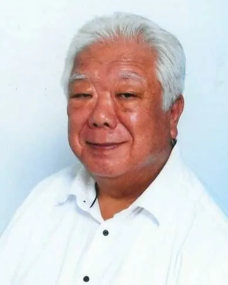

SERVICE 01
相続
多様な選択肢の中から適切なものを
法律で相続に関する事項はある程度定められていますが、発生後に揉めたり、手続きでトラブルが発生したりするケースが少なくありません。お客様自身がご健在で、判断能力がしっかりとしているうちにご自身のご意向に沿った対策や手続きを行っておくと、もしもの事態が発生したときに円滑に手続きを進められるようになりますので、多様な選択肢の中からご希望に合う制度をご紹介します。
お客様それぞれのご要望、置かれている状況に適した適切なアドバイスやサポートをご提供できるように、対応できる業務をできるだけ幅広くしています。個人でも法人でも、税務申告や会計といった納税や経営に関連する事項は多々できますので、特定の業務にだけ特化してしまうと、事例ごとに相談先が異なる場合があります。税務や会計に関連する多様な不安にワンストップでお応えできるように、つくばで営業する税理士事務所として真摯に業務に取り組んでいます。豊富な実績と個々の分野に詳しいスタッフが、きめ細かくサポートします。
お客様それぞれが抱える多様なお悩みに応える各種支援を、税理士としてつくばでご提供できるように尽力しています。例えば、税制が改正されたことにより、相続税の課税対象者が拡大されたことに伴い、相続に関連する相談を受ける機会が増えています。特に、マンションや土地といった資産をお持ちの方は、生前贈与など事前に対策を行っておくことで、節税効果も期待でき、万が一の事態が起こったときも円満に手続きを進められる可能性が高まります。他にも、農業や社会福祉法人など、社会に必要とされる法人の安定経営をサポートします。
お客様は介護、障がい者支援、保育などの社会福祉事業を主とする法人、医療機関や農地所有適格法人などです。個人事業については、市街地農家の相続など、資産税業務を得意としています。何かございましたら、税理士法人永光パートナーズにご相談ください。

お客様が社会的な信頼を維持しながら、税務申告や経営を行えるように独立中正の立場を堅持することと、法律に従うことを徹底しています。近年は、コンプライアンスを重視する企業が増えておりますので、お客様のメリットを最優先にしつつも、個々が必要としている適切なアドバイスやサポートのご提供を通じ、健全な税務や会計手続きを実行できるように尽力しています。
私たちは、開業以来、市街地農家を主たる顧客とする相続税･贈与税･所得税等の税務申告、市街地農地の活用対策業務を専門的に行ってまいりました。農家の皆様にとって農地の承継が最も重要な悩みであります。
私たちは、農家の皆様からの高範囲な課題に対応するため、相続財産の内容分析、納税額の試算、納税対策、土地の有効活用、財産の組替え、相続時精算課税による贈与等の相続税節税対策、信託法を活用した相続人同士がもめないための対策を提案しております。
正確な申告や経営状況を把握するために、巡回監査を基本とし様々な業務に対応しております。日々の帳簿が正確に作成されていなければ、正しく資金繰り表や財務諸表を作成できないだけでなく、法人税や確定申告といった税務申告にも影響が出ます。また、帳簿のデータから、個々の経営状況を把握し、改善した方が良いポイントの指摘や経営者の意思決定をサポートしています。
法律で相続に関する事項はある程度定められていますが、発生後に揉めたり、手続きでトラブルが発生したりするケースが少なくありません。お客様自身がご健在で、判断能力がしっかりとしているうちにご自身のご意向に沿った対策や手続きを行っておくと、もしもの事態が発生したときに円滑に手続きを進められるようになりますので、多様な選択肢の中からご希望に合う制度をご紹介します。
良質な農作物を作ることももちろん大切ですが、経営が安定しなければ農業を続けることが難しくなりますので、税務や経営の知識を活かし、農業経営の安定化を目指したきめの細かいサポートのご提供に尽力しています。業務全般の収支を把握することが経営の安定化に繋がりますので、農業経営に特化した税務会計支援、経営を改善するための経営計画作成にも対応しています。
保育所や介護事業所といった社会福祉事業を営んでいる社会福祉法人の設立から、経営までお客様の現状とご希望に合わせたサポートを行っています。施設整備の際には、役所や自治体、行政との調整が必要になりますが、これまでにも社会福祉法人の設立をサポートしてきた実績を活かし、円滑に設立手続きが進められるように行政機関との交渉まで含めて、きめ細かくお手伝いします。
現経営者様から、次の経営者様にスムーズにバトンタッチするための事業承継に関するご相談やご依頼をつくばで承っています。中小企業を中心に、後継者不足の問題が注目されていますが、「まだまだ自分は大丈夫だろう」と考えている経営者様も多いのではないでしょうか。しかし、後継者選びや準備には数年の時間が必要となるため、早めに対応を考えておくことが大切です。
煩雑な確定申告業務をプロにお任せいただき、本業に集中できるようにつくばでお手伝いいたします。簿記の知識や経理の経験がない方にとって、毎年一度とはいえ申告に必要な領収書をまとめたり、書類に記載したりする業務は思っていた以上に煩雑で負担が大きいと言えます。また、申告が正確でなければ修正が必要になるため、税務のプロがお客様の代わりに申告を行います。
「親戚で遺産の分割でもめた事例を知っているので、自分が元気なうちに相続のことを明確にしておきたい」といった税務や会計に関連する様々なご相談をつくばで承っています。お客様のご要望をしっかりと反映させて手続きを行うために、税金のことも含めて遺言書の作成や任意後見制度の活用、民事（家族）信託の組成といった資産に関するサポートを行っており、円滑に手続きが進むようにお手伝いしています。
今現在抱えている課題やお悩みだけでなく、今後のお客様の発展に繋がるようなご提案ができるようにつくばにて活動する税理士として、税務や会計、経営の専門的な知識を活かしたサポートを行っています。相続や事業承継といった個人や法人のお客様が抱える負担や悩みに寄り添っており、お客様の未来の発展を願い、法令順守を徹底して中立的な立場から適切な対策のご提案に努めます。
お客様のお悩みや不安の解決を税務や会計のスペシャリストとしてサポートすることを通じ、お客様や地域社会との共存共栄を目指す税理士事務所を野田とつくばで営んでいます。社会福祉法人や医療経営のコンサルティング業務といった法人のお客様向けのサービスだけでなく、相続や確定申告といった個人のお客様向けのサービスにも対応し、税務や経営に関するお悩みに丁寧に寄り添います。
つくばの税理士事務所としてご対応できる内容など業務に関するお問い合わせを承っております。お気軽にご相談ください。